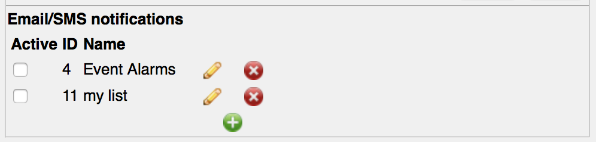
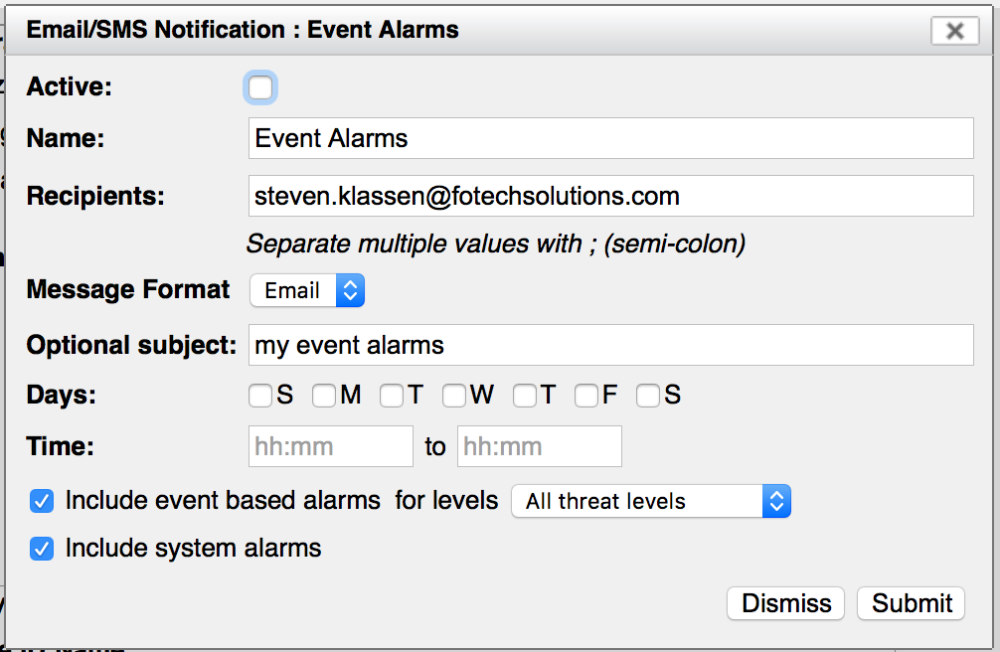
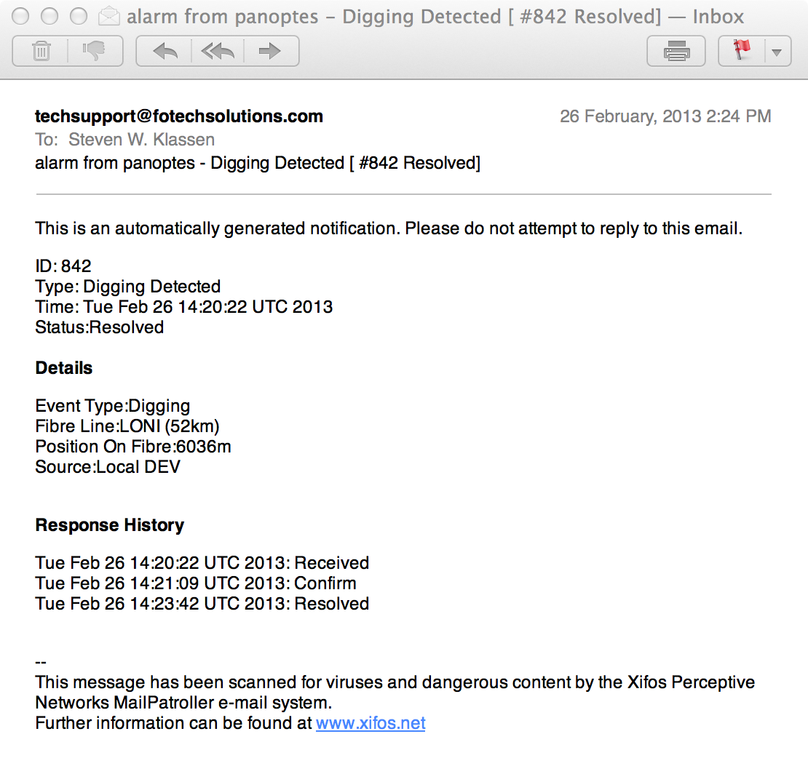

Email (and SMS) Notifications¶
A recent addition to our Panoptes system is the ability to automatically send out an email alarm notification.
In V14.2 we redesigned this section to allow for SMS support and for separate email notifications lists. For example you can have one list for a day shift and a separate list for a night shift.
Configuring this section will allow an email or SMS notification to be sent to the addresses of your choice whenever an alert is created or resolved.
Advantages
In general you don’t have to write anything special to receive these notifications. You do need to configure the Panoptes to be able to send email, and then you need to specify what level of alarms you want to receive.
Disadvantages
The key disadvantage is the time delay in these notifications. Unlike the Web Socket and XML interfaces (which receive a response right away) there is no indication of when, or even if, a given email reaches its intended recipient. There can be significant delays along the way, starting with the fact that Panoptes only looks for emails to send out every few minutes.
In addition the only information we send via email are the alarm based notifications. And even then we only send them when they are generated, or escalated in their threat level, or are resolved. They are not sent repeatedly as confirmations continue the way the XML messages are.
Also, these notifications do not cover as much content as the XML messages in that they do not cover heartbeats or system health messages.
Configuring¶
Configuring the email notifications is performed in the “Admin/Notifications…” menu item. Note that you must be logged in as a user with “Organization Admin” privileges in order to see this page.
The “General notification settings” at the top of the page applies to both the XML and Email notifications and is described in more detail above in the XML notification section. The description below covers the “Email/SMS notifications” section.
{kind=link}
In this section you will see a list showing all the currently configured email notification lists. To create a new list press the “+” icon. To remove a list press the “x” icon and to edit a list press the pencil icon. The first column (entitled “Active”) allows you to turn a list on or off without deleting it. This is useful if you want different lists to be active at different points in time.
When you press the add (“+”) or edit (the pencil) icons you will see a dialog appear allowing you to enter the details of the list.
{kind=link}
The “active” checkbox allows you to make the list active or inactive. This is exactly the same as the “active” checkbox in the list view.
The “name” field allows you to provide a name used to describe the list. This name is not used for anything other than to be shown in the list in order to allow you to tell the difference between the different lists.
In the “Recipients” field type in the email address that you want the notifications sent to. You can specify more than one by separating them by the ‘;’ character.
The “Message Format” field allows you to specify that the message is either an Email or an SMS. An email message will contain a fair bit of detail and will be sent as alarms are escalated and resolved. An SMS message will contain only a very small amount of detail and will only be sent once per alarm. It is intended to get the attention of an operator who would then presumably login to the system to see what is actually happening. (Note that our “SMS” is actually still an email. It is assumed that you will provide an email address that will send the message as an SMS to someone’s phone. The details on how to accomplish this may differ from one phone provider to another and will need to be obtained from your provider.)
You can also optionally specify the subject line that you would like to appear in the email message. If the “Message Format” is set to “Email” and you don’t specify a subject, a generic one (e.g. “Alarm notification - Digging Detected”) will be automatically created for each alarm. If the “Message Format” is set to “SMS” and you don’t specify a subject, no subject will be added. This is done since some Email to SMS conversion services use the subject to send authentication or to specify the phone number to which the message should be forwarded. You will need to find out these details from your cellular phone provider.
The “Days” setting allows you to specify what days this list should be active. Note that the first “S” (at the start of the line) is “Sunday” and the last “S” is “Saturday”.
The “Time” setting allows you to specify what time of day this list should be active. This time will be in the time zone specified in the general notification settings section. If you leave these blank then no time filter is used, i.e. all times will be accepted.
Finally you will see two checkboxes. The first allows you to include the event based alarms. This also has a dropdown allowing you to select what threat level an alarm should reach before the email is sent. The second checkbox allows you to include the system alarms.
Test Messages¶
In order for emails to be sent out the system must be configured to talk to a proper SMTP mail server. By default a new system will send messages through a Fotech mail server. But this will almost always be changed by the field engineers when the system is installed in order to use a mail server owned by you. The details of how to configure this are not described in this document. Suffice it say that you will need assistance from our field engineers plus your own IT group in order to get the email notifications properly enabled.
To assist with this configuration this page provides a “Send test email” section. Enter a single email address in the field and press the “Send test email” button. This will actually send two slightly different messages. The first will be sent immediately via the underlying email protocols. This tests that the email is properly configured. The second message will be queued like all the other email and SMS messages sent from our system. This is used to test that the cron job used to send the emails has been properly configured.
Example Message¶
The following is an example of an Email received given the settings shown in the above dialog. As you can see the message is sent from the address “techsupport@fotechsolutions.com”. The subject has been created by taking the subject line given above, appending to it the alert ID (#842 in this case) and the current alert status (Resolved in this case).
{kind=link}
The main body of the message contains the alert ID, it’s type, the time it was generated and its current status. (Note that it’s status will typically be “New” or “Resolved” as it is only on receipt and resolution of the alarms that we send the emails. However it is technically possible for the status to be “Acknowledged” if the operator has acknowledged it before the email notification has been generated.)
Following will be the alarm details. These will be similar to those described in the XML notifications except that instead of keys like “position” you will see english text like “Position On Fibre”.
Following the details will be the response history. When you first receive an alarm this will tend to just have a “Received” or possibly a “Received” and a “Confirmed” line. When the alarm is resolved you will see the full history including any “Acknowledged” and possibly multiple “Confirmed” lines, followed by the “Resolved” line.